이전 개발자를 위한 인프라 기초 총정리 포스트에서 컨테이너와 도커에 대해 간단히 살펴봤습니다. 이해하기 어려운 개념은 아니지만 막상 뭔가를 하려면 막막할 수 있는데요, 이번 포스트에서는 도커의 컴포넌트와 내부 기술을 알아보고 가상 환경을 구축해서 도커를 설치하고 실행해보려고 합니다.
도커 Docker
애플리케이션은 하드웨어, OS, 미들웨어 등 인프라 환경에 민감하게 반응할 때가 많습니다. 개발 환경과 테스트 환경에서는 동작을 잘 하다가 제품 환경에서는 동작하지 않는 경우도 있습니다. 이럴 경우 고객사의 인프라, 보안 환경, 각종 OS 나 미들웨어의 버전 등 원인이 다양할 수 있어 찾기가 쉽지 않습니다.

도커는 애플리케이션 뿐만 아니라 실행에 필요한 시스템 환경을 모아서 컨테이너(Container)로 관리합니다. 이렇게 만든 것을 도커 이미지(Docker Image)라고 하는데 이 이미지로 만든 컨테이너는 도커가 설치된 곳이라면 어디든 똑같이 동작합니다. 그곳이 Windows 든, macOS 든, Linux 든 상관이 없고 온프레미스(On-premise) 든 클라우드든 상관 없습니다.

이를 이용하면 개발자가 커밋을 할 때마다 Jenkins 와 같은 지속적인 통합(Continuous Integration, CI) 툴에서 해당 소스를 도커 이미지로 빌드하고 이미지 리파지토리에서 이미지를 버전 별로 관리할 수 있습니다. 해당 이미지를 어느 환경이든 배포만 하면 독립적으로 동작하기 때문에 지속적인 딜리버리(Continuous Delivery, CD)가 가능합니다.
도커는 특히 분산 환경을 쉽게 구축할 수 있는 클라우드 서비스와 잘 맞습니다. 그래서 주요 클라우드 프로바이더들은 모두 컨테이너 실행 환경을 쉽게 관리할 수 있는 서비스를 제공합니다.
- Amazon Elastic Container Service
- Microsoft Azure Container Instances
- Google Cloud Platform Kubernetes Engine
또한 각 서비스를 독립적인 배포 단위로 구성하는 마이크로서비스 아키텍처(Microservices Architecture, MSA)와도 잘 맞습니다. 각 서비스를 컨테이너로 배포하는 것이죠.[1]
도커의 기능
도커는 컨테이너의 리소스, 파일 시스템, 네트워크를 기존 시스템과 격리시키고 도커 이미지를 관리하고 공유하는 기능을 제공합니다. 도커의 대표적인 기능 세 가지(Build, Ship, Run)를 살펴보겠습니다.
Build - 이미지 만들기

도커는 애플리케이션과 실행에 필요한 라이브러리, 미들웨어, OS, 네트워크 설정 등 필요한 모든 파일을 모아서 도커 이미지로 만듭니다. 도커 이미지는 명령어를 이용해 수동으로 만들 수도 있지만 자동으로 빌드와 배포를 하는 CI/CD 환경에서는 도커 설정 파일(Dockerfile)을 이용해 자동으로 만들 수도 있습니다.
보통 이미지에는 하나의 애플리케이션만 넣고 여러 컨테이너를 조합해서 서비스를 구축하는 방법을 사용합니다. 또한 이미지를 여러 개 같이 사용할 수 있습니다. 예를 들면 CentOS 리눅스 이미지와 Nginx 웹 서버 이미지를 겹쳐서 새로운 이미지를 만들 수 있습니다.
Ship - 이미지 공유

도커 이미지를 업로드해서 공유하는 저장소를 도커 레지스트리(Docker Registry)라고 합니다. 대표적으로는 도커의 공식 레지스트리인 Docker Hub 가 있습니다. 도커 허브에서는 업체에서 제공하는 공식 이미지를 받을 수 있습니다.[2] Ubuntu 나 CentOS 같은 OS 이미지, MySQL, Redis, MongoDB, Nginx 와 같은 미들웨어, OpenJDK, Golang, NodeJS 와 같은 플랫폼 이미지도 제공합니다.
이런 베이스 이미지를 활용하면 환경을 빠르고 안전하게, 그리고 자동으로 구축할 수 있습니다. 내가 만든 애플리케이션 또한 이미지로 만들어서 업로드하고 공유할 수 있습니다. Github 와 같은 형상관리툴과 연동해서 Dockerfile 을 관리하고 도커 이미지를 자동으로 빌드해서 도커 허브로 배포도 가능합니다.

퍼블릭 클라우드에서는 비공개 레지스트리와 CI/CD 를 쉽게 구성할 수 있는 아키텍처를 제공합니다. Amazon Elastic Container Registry 나 Google Cloude Platform 의 Container Registry 가 있습니다. 사실 이런 도커 이미지는 보안에 취약합니다. 해당 시스템에 보안 취약점이나 악성 코드가 심어져 있다면 어떨까요? GCP 컨테이너 레지스트리는 보안을 강화하기 위해 컨테이너 이미지가 등록되면 취약점을 스캔하고 정책에 위배되는 이미지는 배포를 막고 잠금 처리하고 있습니다.
Run - 컨테이너 동작
도커는 도커 이미지를 가지고 컨테이너를 생성해서 동작시킵니다. 하나의 이미지를 가지고 여러 개의 컨테이너를 만들어낼 수도 있습니다. 도커는 컨테이너를 생성하고 관리하기 위한 여러 명령을 제공합니다.
실제 업무에서는 보통 한 대의 호스트에 모든 컨테이너를 동작시키는 것이 아니라 여러 호스트로 된 분산 환경인 경우가 많습니다. 이런 분산 환경에서 여러 노드의 컨테이너를 관리하기 위해 쿠버네티스(Kubernetes, k8s)와 같은 컨테이너 오케스트레이션 툴(Container Orchestration Tool)을 주로 사용합니다. 오케스트레이션이란 컨테이너 배포, 장애 복구, 로드 밸런싱 등 여러 기능을 자동으로 처리해주는 것을 말합니다.
도커를 구성하는 컴포넌트
도커를 구성하고 있는 컴포넌트는 다음과 같습니다.
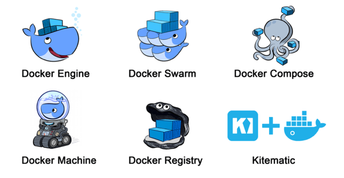
- Docker Engine : 도커 이미지를 생성하고 컨테이너를 실행하는 핵심 기능.
- Docker Registry : 도커 이미지 공개 및 공유. 도커 허브도 도커 레지스트리를 사용.
- Docker Compose : 여러 컨테이너를 관리하기 위한 툴.
- Docker Machine : 로컬의 VirtualBox 나 퍼블릭 클라우드에 도커 실행 환경을 구축하는 툴.
- Docker Swarm : 여러 도커 호스트를 마스터(Master)와 노드(Node) 구조로 클러스터화하는 툴. 쿠버네티스와 비슷한 기능.
도커를 이루는 기술
도커는 리눅스 커널 기술을 기반으로 컨테이너를 구성합니다. 도커를 이루는 기술을 간단하게 살펴보겠습니다.
namespace
먼저 컨테이너라는 가상의 독립된 환경을 만들기 위해 리눅스 커널의 namespace 라는 기능을 사용합니다. 쉽게 얘기하면 리눅스 오브젝트에 이름표를 붙여 같은 이름표가 붙여진 것들만 묶어 관리합니다. 아래 내용에서 격리(isolated)라는 의미는 다른 네임스페이스에서는 접근이 불가능하다는 걸 의미합니다.
| 네임스페이스 | 설명 |
|---|---|
| PID namespace | 각 프로세스에 할당된 고유한 ID 인 PID 를 기준으로 다른 프로세스를 격리. 네임스페이스가 다르면 액세스 불가. |
| Network namespace | 네트워크 리소스(IP 주소, 포트 번호, 라우팅 테이블 등)를 네임스페이스마다 독립적으로 가져감. 예를 들어 같은 포트라도 네임스페이스가 다르면 사용 가능. |
| UID namespace | 사용자 ID(UID)와 그룹 ID(GID)를 네임스페이스 별로 구분. 따라서 컨테이너에서는 루트 권한을 가지고 있더라도 호스트의 관리 권한을 가질 수 없도록 격리 가능. |
| MOUNT namespace | 리눅스에서 디바이스를 인식하기 위해 마운트가 필요. 파일 시스템 등 마운트된 디바이스를 네임스페이스별로 격리. |
| UTS namespace | 호스트명이나 도메인명을 네임스페이스별로 독자적으로 설정 가능. |
| IPC namespace | 프로세스 간 통신(inter process communication)에 필요한 공유 메모리(Shared Memory), 세마포어(Semaphore), 메시지 큐(Message Queue) 등을 독자적으로 사용. |
cgroups
리눅스에서 프로그램은 프로세스로 실행되고, 프로세스는 하나 이상의 쓰레드로 이루어져 있습니다. cgroups(Control Groups) 는 프로세스와 쓰레드를 그룹화해서 관리하는 기술입니다. 호스트 OS의 자원을 그룹별로 할당하거나 제한을 둘 수 있습니다. 즉 컨테이너에서 사용하는 리소스를 제한함으로써 하나의 컨테이너가 자원을 모두 사용해 다른 컨테이너가 영향을 받지 않도록 할 수 있습니다. 또한 그룹에 계층 구조를 적용할 수 있어 체계적으로 리소스를 관리할 수 있습니다.
| 항목 | 설명 |
|---|---|
| cpu | CPU 사용량 제한. |
| cpuacct | CPU 사용량 통계 정보 제공 |
| cpuset | CPU 나 메모리 배치 제어. |
| memory | 메모리나 스왑(Swap) 사용량 제한. |
| devices | 디바이스에 대한 액세스 제어. |
| freezer | 그룹 내 프로세스 정지 및 재개. |
| net_cls | 네트워크 제어. |
| blkio | 블록 디바이스 입출력량 제어. |
네트워크 구성
컨테이너의 네트워크 구성을 살펴보겠습니다. 먼저 NIC(Network Interface Controller)는 네트워크 신호를 주고받을 때 쓰는 하드웨어로 랜 카드를 생각하시면 됩니다. 리눅스는 이 네트워크 장치를 /dev/eth0, /dev/eth1 이런 식으로 인식합니다. eth0 은 기본 네트워크 장치라고 볼 수 있습니다.

도커 컨테이너가 실행되면 컨테이너에 172.17.0.0/16 이란 프라이빗 IP 주소가 eth0 으로 자동 할당됩니다. 이를 docker0 이라고 합니다. 이 docker0 은 각 컨테이너 네트워크를 연결해주는 네트워크 브리지(network bridge) 역할을 하는데요, 각 컨테이너의 eth0 에 docker0 이 만든 가상 NIC 인 veth 를 할당합니다. 또한 외부에서 요청을 컨테이너로 라우팅합니다.
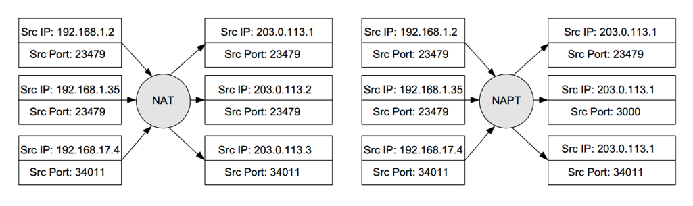
컨테이너가 외부 네트워크와 통신할 때는 NAPT(Network Address Port Translation)라는 기술을 사용합니다. 퍼블릭 IP 주소와 프라이빗 IP 주소를 일대일로 변환하는 NAT(Network Address Translation)와 달리 NAPT 는 포트 정보까지 활용하기 때문에 하나의 퍼블릭 IP 주소로 여러 대의 머신을 동시에 연결할 수 있습니다.
컨테이너 데이터 관리

도커는 컨테이너에서 사용하는 데이터를 호스트 내에 저장하기 위해 세 가지 방법을 제공합니다.
- Volumes : 호스트의 파일 시스템 내에 특정 영역(리눅스의 경우
/var/lib/docker/volumes/)을 도커가 관리하면서 사용. 도커가 아닌 다른 프로세스에서는 해당 영역 접근이 불가능. 가장 추천하는 방식. - Bind mounts : 호스트의 파일시스템 자체를 사용. 중요한 시스템 파일이나 디렉토리도 접근 가능. 호스트와 컨테이너가 설정 파일을 공유하거나 호스트에서 개발하고 컨테이너로 배포하는 방식으로 사용.
tmpfsmounts : 호스트의 파일시스템 대신 메모리에 저장하는 방식. 파일 시스템에 저장하고 싶지 않을 경우 사용.

도커 이미지는 Dockerfile 로 만들어진 여러 레이어로 이루어져 있고 각 레이어는 읽기만 가능(Read-only)합니다. 이미지를 가지고 새로운 컨테이너를 생성하면 읽고 쓸 수 있는(Readable and Writable) 레이어가 추가되는데 이를 컨테이너 레이어(Container Layer)라고 합니다. 컨테이너를 가지고 작업을 수행할 때 생기는 변경 사항을 모두 컨테이너 레이어에 저장하고 읽을 때는 도커 이미지에 변경된 사항을 조합해서 데이터를 읽습니다. 컨테이너가 삭제되면 컨테이너 레이어도 사라지고 기존 이미지는 변경되지 않고 유지됩니다.

따라서 하나의 이미지에서 여러 컨테이너를 만들어서 사용할 수 있습니다. 만약 컨테이너가 서로 데이터를 공유해야 한다면 도커 볼륨에 저장하고 컨테이너에 마운트하면 됩니다.
도커는 Copy-on-Write(CoW or COW) 방식으로 파일을 관리합니다. Copy-on-Wirte 는 효율적으로 파일을 공유하고 복사하는 방법입니다. 파일 또는 디렉토리를 읽기만 할 땐 기존 파일을 참조하도록 하고, 수정해야 하는 경우에만 파일을 컨테이너 레이어로 복사해서 수정하는 방법입니다. 따라서 꼭 필요한 경우에만 복사가 되므로 데이터 중복이 없고 효율적으로 사용할 수 있습니다.
도커는 이런 방식으로 레이어와 파일을 관리하기 위해 스토리지 드라이버(Storage Driver)를 사용합니다. 다양한 종류의 스토리지 드라이버를 지원하는데 작동하는 방법이 조금씩 다릅니다. 리눅스 배포판 커널에 따라 다른 드라이버를 사용하게 됩니다. 각 스토리지 드라이버에 대한 자세한 설명은 공식 문서를 참고하세요.
| 리눅스 배포판 | 스토리지 드라이버 |
|---|---|
| Ubuntu | aufs, devicemapper, overlay2 (Ubuntu 14.04.4 or later, 16.04 or later), overlay, zfs, vfs |
| Debian | aufs, devicemapper, overlay2 (Debian Stretch), overlay, vfs |
| CentOS | devicemapper, vfs |
| Fedora | devicemapper, overlay2 (Fedora 26 or later, experimental),overlay (experimental), vfs |
가상 환경 준비
이제 도커를 설치할 차례입니다. 그 전에 먼저 가상 머신(Virtual Machine, VM)을 준비하겠습니다. 도커는 리눅스 외에도 로컬 환경의 Windows 나 macOS 에서 사용할 수 있도록 클라이언트를 제공하고 있습니다. 이 방법이 가장 간단한 방법이라서 많은 책이나 튜토리얼에서 로컬에 클라이언트를 설치해서 진행합니다. 하지만 앞으로 도커를 사용할 때 대부분 리눅스가 설치된 VM 상에서 사용할 것임을 생각해본다면 VM에서 해보는 것이 낫습니다. 뭔가 잘못 돼도 VM 만 지우고 다시 생성하면 되니까 실습하기도 편하구요.
리눅스가 설치된 VM 을 사용하는 방법은 세 가지 정도가 있을 겁니다.
- VirtualBox 로 VM 생성 후 리눅스 설치
- Vagrant 를 이용해 리눅스가 설치된 Box 이미지로 VM 생성
- 퍼블릭 클라우드(AWS, GCP)로 리눅스 VM 인스턴스 생성
VirtualBox

첫 번째 방법은 호스트 가상화입니다. 호스트 OS 위에 VIrtualBox 같은 가상화 SW를 설치하고 이를 이용해 가상 환경을 구축하는 방식입니다. VirtualBox 설치 후 클릭 몇 번이면 로컬 VM 이 만들어지기 때문에 쉬운 방법으로 개발 환경 구축에 많이 사용합니다. 다만 물리 환경의 호스트 OS 와 가상 환경의 게스트 OS 모두 존재하기 때문에 용량이 크고 느린 단점이 있습니다.
이 방법으로는 VM 을 만들더라도 OS 나 미들웨어를 직접 설치해야 하는 번거로움이 있습니다. 따라서 이 방법은 패스하고 두 번째 방법으로 넘어가겠습니다.
Vagrant
Vagrant 는 VM 을 손쉽게 만들고 설정할 수 있는 방법입니다.
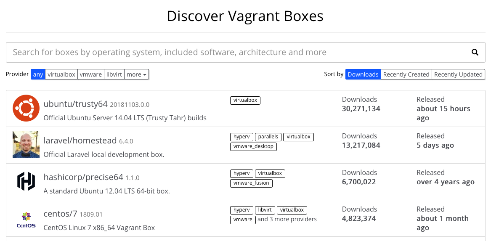
도커에서 공식 이미지를 지원하는 것처럼 Vagrant 도 여러 VM 이미지를 제공하고 있습니다. 우리는 VM 을 만들고 리눅스를 손수 설치하는 대신 원하는 이미지를 받아서 바로 VM 을 사용할 수 있습니다.
각종 VM 설정을 Vagrantfile 이라는 설정 파일에 작성하는데요. 이 Vagrantfile 만 있으면 똑같은 VM 환경을 바로 만들어낼 수 있습니다. 따라서 여러 개발자가 똑같은 환경을 구축해서 사용할 수 있게 됩니다. 새로운 개발자가 오면 가이드에 따라 이것저것 설치하고 구성하는 대신에 그냥 Vagrant 를 사용해서 이미 환경 구성이 된 이미지를 받으면 됩니다. 환경 구성 시간을 줄일 수 있어 교육용으로도 적합합니다.
그럼 실제로 만들어 봅시다!
먼저 VM 이미지를 실행시킬 VirtualBox 를 설치합니다. 다양한 툴을 지원합니다만 기본적인 VirtualBox 로 하겠습니다.
원하는 경로에 폴더를 만들고 해당 폴더에서 초기화합니다.
1 | $ vagrant init |
생성된 Vagrantfile을 수정합니다. 이 포스트에서는 CentOS 7 로 설치해보려고 합니다. CentOS 7의 버전을 지정해주지 않으면 그냥 최신 버전으로 설치합니다. 내부에서 접속할 수 있는 고정 IP 를 할당하고 나중에 웹 서버를 이용하기 위해 포트를 포워딩해줍니다.
1 | Vagrant.configure("2") do |config| |
vagrant up 을 입력하면 박스를 다운로드하고 실행합니다. 이미 다운로드한 박스가 있으면 기존 박스를 사용하게 됩니다.
1 | $ vagrant up |
vagrant ssh 로 VM 에 SSH 접속합니다. 기본적으로 vagrant 계정을 사용하며 sudo -i 로 root 계정에 접속할 수 있습니다.
1 | $ vagrant ssh |
설치 과정을 asciinema 영상으로 확인하실 수 있습니다. asciinema 는 터미널 녹화 서비스로 영상 내 텍스트를 복사할 수 있습니다.
Windows 에서 PuTTY 와 같은 클라이언트로 접속하고 싶으실 경우엔 해당 vagrant 폴더 안에 .vagrant/machines/default/virtualbox 경로 안에 있는 private_key 파일을 가져다 PuTTYgen 로 .ppk 파일을 생성하신 후에 접속 시 사용하시면 됩니다.
(추가) Vagrant 는 사용하다보면 vagrant up 이 잘 안되는 경우가 있습니다. vagrant status 를 해보면 제대로 실행이 됐는지 확인해볼 수 있습니다. 제 경우는 macOS 는 큰 문제가 없었고 Windows 7 에서 간간히 발생했는데, 이런 경우엔 vagrant halt 와 vagrant up 을 반복하면 신기하게도 잘 올라갑니다. Vagrant 버전을 업그레이드하는 것도 하나의 방법입니다. 또는 그냥 VirtualBox 에서 VM 을 실행 후 접속하는 것이 가장 잘 됩니다.
클라우드 VM 인스턴스
세 번째 방법은 클라우드 서비스를 사용하는 겁니다. 사실 학습 환경은 vagrant 로도 충분하지만 Vagrant 를 이용하는 것이 복잡하거나 로컬 리소스를 사용하길 원하지 않을 수도 있습니다. 또는 간단한 프로젝트를 만들어서 서비스하려면 클라우드를 이용하는 것이 좋겠죠. 그래서 AWS(Amazon Web Service)와 GCP(Google Cloud Platform)를 이용해 VM 인스턴스를 생성 후 도커를 설치해보려고 합니다. 일단 Vagrant 기반으로 진행하고 클라우드 기반은 뒤에서 다시 다루겠습니다.
도커 설치와 실행
환경도 다 준비되었으니 도커를 설치해보겠습니다.
도커 에디션과 릴리즈
도커는 무료로 이용할 수 있는 커뮤니티 에디션과 상용인 엔터프라이즈 에디션이 있습니다. 상용 에디션은 고객 지원 및 보안과 플러그인 등 추가 기능을 제공합니다.
- Docker Community Edition(Docker CE)
- Docker Enterprise Edition(Docker EE)

도커의 버전은 연도 두 자리와 월 두 자리로 구분합니다. 예를 들어 v17.09 는 17년 09월에 나온 버전입니다. CE 는 매달 새로운 기능을 먼저 사용해볼 수 있는 Edge 버전과 분기별로 릴리즈되는 Stable 버전이 있습니다. EE 는 CE 의 Stable 과 같이 릴리즈됩니다.
우리는 CE 버전으로 진행합니다.
도커 설치
필요한 패키지를 설치합니다.
1 | $ sudo yum install -y yum-utils \ |
도커 리파지토리를 설정합니다.
1 | $ sudo yum-config-manager \ |
Edge 버전과 Test 버전은 docker.repo 에 포함되어 있으나 기본적으로 disabled 되어 있습니다. 필요한 경우 enable 해서 사용할 수 있습니다. 여기선 그냥 패스합니다.
1 | $ sudo yum-config-manager --enable docker-ce-edge |
Docker CE 를 설치합니다. 기본적으로 최신 버전(latest)이 설치됩니다.
1 | $ sudo yum install docker-ce |
특정 도커 버전이 필요한 경우는 버전까지 입력합니다. 쿠버네티스 버전에 따라 권장하는 도커 버전이 있어서 이럴 땐 특정 버전을 설치해야 하는 경우가 있습니다.
1 | $ yum list docker-ce --showduplicates | sort -r # 가능한 버전 확인 |
도커를 시작합니다.
1 | $ sudo systemctl start docker |
(옵션) 도커 데몬은 root 가 소유한 유닉스 소켓을 사용하므로 일반 사용자는 sudo 가 필요합니다. 학습 과정이므로 root 사용자로 사용해도 상관은 없지만 일반 유저로 진행하고 싶다면 다음 과정을 진행합니다.
docker 그룹을 만듭니다. 아마 이미 만들어져 있을 겁니다.
1 | $ sudo groupadd docker |
사용자를 docker 그룹에 추가합니다.
1 | $ sudo usermod -aG docker $USER |
로그아웃 후 다시 로그인합니다. 만약 그래도 권한이 없다고 나온다면 다음 명령어로 권한을 부여합니다.
1 | $ sudo chown "$USER":"$USER" /home/"$USER"/.docker -R |
(옵션) 시스템 부팅 시 도커를 시작하도록 설정할 수 있습니다.
1 | $ sudo systemctl enable docker # 설정 ON |
도커 상태 확인
다음은 도커의 상태를 확인할 수 있는 몇 가지 명령어입니다.
도커 버전 확인 : docker version
1 | $ docker version |
도커 실행 환경 확인 : docker system info
1 | $ docker system info |
도커 디스크 상태 확인 : docker system df
1 | $ docker system df |
여기까지 설치 및 확인 과정을 영상으로도 확인해보세요.
Hello, World!
도커를 새로 설치했으니 ‘Hello, World’ 한번 찍어보고 가야겠죠?
1 | $ docker run hello-world |
docker run 명령어는 컨테이너를 새로 만들고 실행까지 하는 명령어입니다. 먼저 기존에 다운 받은 hello-world 라는 이미지가 있는지 확인하고 없으면 새로 다운로드합니다. 그리고 컨테이너가 실행되면 다음과 같이 메시지가 출력됩니다.
1 | Hello from Docker! |
여기까지 과정을 영상으로 확인해보세요.
Nginx 설치 및 실행
이번엔 웹 서버를 설치하고 접속해보겠습니다. 대표적인 웹 서버 중 하나인 Nginx 를 설치합니다. 도커에서 제공하는 공식 이미지를 사용하면 아주 쉽게 설치할 수 있습니다.
Nginx 이미지를 다운로드합니다.
1 | $ docker pull nginx |
다운로드한 이미지는 docker images 로 확인할 수 있습니다.
1 | $ docker images |
Nginx 컨테이너를 실행합니다. 하나의 Nginx 서버를 띄운 거라고 볼 수 있습니다.
1 | $ docker run --name webserver -d -p 80:80 nginx |
--name: 컨테이너의 이름을 지정.-d옵션 : 컨테이너를 백그라운드에서 실행하고 컨테이너 ID 를 출력.-p옵션 : 컨테이너의 특정 포트를 호스트로 오픈.-p <host-port>:<container-port>형식으로 사용 가능.
만약-p <container-port>형식으로 쓰면 호스트의 포트는 임의로 할당.
docker run 실행 시 다운로드된 이미지가 없으면 이미지를 받아서 컨테이너를 생성하므로 docker pull 명령어는 생략할 수 있습니다.
컨테이너 목록에서 확인 : docker ps
1 | $ docker ps |
컨테이너 상태 확인 : docker container stats
1 | $ docker stats webserver |
컨테이너 기동과 종료가 필요한 경우는 docker start 와 docker stop 을 사용합니다.
1 | $ docker start webserver |
여기까지 과정을 영상으로 확인해보세요.
웹 브라우저에서 접속해보겠습니다. 가상머신의 고정 IP를 192.168.33.10 으로 설정했으므로 http://192.168.33.10:80 으로 접속합니다. 그러면 다음과 같이 잘 접속되는 걸 볼 수 있습니다.
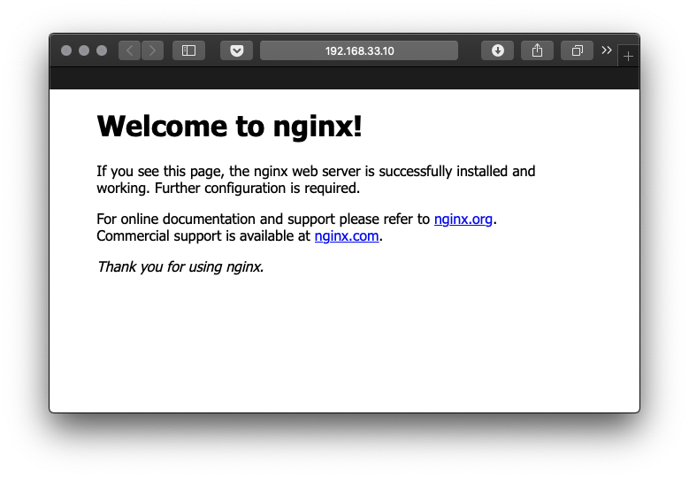
Dockerfile 로 컨테이너 이미지 만들기
도커 이미지는 Dockerfile 이라는 설정 파일을 이용해 자동으로 빌드할 수 있습니다. 앞에서 실습한 Nginx 를 이용해서 스태틱 사이트를 만들고 이를 컨테이너 이미지로 만들어보겠습니다.
도커 이미지는 베이스 이미지(base image)를 기반으로 그 위에 변경 사항을 레이어 형태로 쌓습니다. 그래서 Dockerfile 은 FROM 명령어를 이용해 어떤 베이스 이미지와 버전을 사용할지 선택합니다.
1 | FROM nginx:latest |
초기 화면을 지정할 index.html 파일을 만들어줍니다. 그냥 간단하게 헤더만 넣었습니다.
1 | <h1>Hello, Docker!</h1> |
index.html 파일을 컨테이너로 복사하기 위해 COPY 명령어를 추가합니다.
1 | COPY index.html /usr/share/nginx/html/index.html |
80 포트로 접속할 수 있도록 하기 위해 EXPOSE 명령어를 추가합니다.
1 | EXPOSE 80 |
EXPOSE 80 443 또는 EXPOSE 3000-4000 처럼 여러 포트를 지정할 수도 있습니다.
CMD 명령어로 실제로 실행할 명령어를 지정할 수 있습니다. Nginx 가 데몬화(daemonize)되어 백그라운드(background)에서 동작하면 컨테이너 기동 시 그냥 종료되기 때문에 포그라운드(foreground)에서 동작할 수 있도록 명령어를 줍니다.
1 | CMD ["nginx", "-g", "daemon off;"] |
CMD 명령어와 비슷한 기능으로는 RUN 명령어가 있습니다.
RUN: 해당 명령어를 이미지가 빌드할 때 실행. e.g.RUN npm installCMD: 해당 명령어를 컨테이너를 기동될 때 실행. e.g.CMD ["nginx", "-g", "daemon off;"]
주로 도커 이미지로 빌드된 애플리케이션을 실행할 때 사용되거나RUN명령어로 오버라이딩(overriding)할 수 있어 디폴트 명령어를 지정할 때 쓰이기도 함.
작성한 Dockerfile 은 다음과 같습니다.
1 | FROM nginx:latest |
현재 폴더 상황은 다음과 같습니다.
1 | ./ |
docker build 명령어를 이용해 이미지를 빌드합니다. 태그를 이용해 이미지의 이름과 버전을 줄 수 있습니다.
1 | $ docker build -t my-nginx-image:latest . |
docker images 로 빌드된 이미지를 확인할 수 있습니다.
1 | $ docker images |
도커 이미지를 가지고 컨테이너를 실행합니다.
1 | $ docker stop webserver # 위에서 실습한 서버 종료 |
docker ps 로 상태도 확인해봅니다.
1 | $ docker ps |
http://192.168.33.10 으로 접속 확인도 해봅니다.
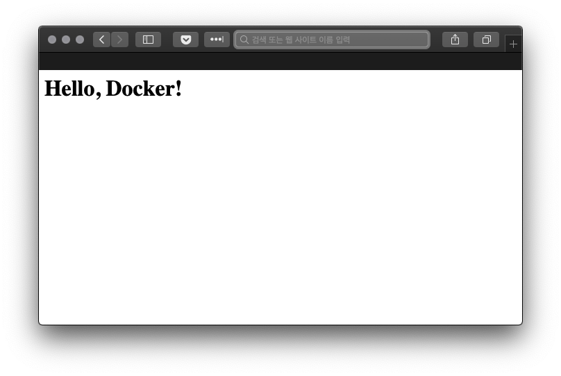
여기까지 과정을 영상으로 확인해보세요.
여기선 간단한 명령어 위주로 살펴봤지만 Dockerfile 을 이용해 다양한 작업을 할 수 있습니다.
도커와 클라우드
이번엔 위에서 말씀드린대로 클라우드 환경에서 VM 인스턴스를 생성하고 도커를 설치해보겠습니다. 먼저 AWS, 그 다음 GCP 를 살펴봅니다.
AWS EC2
AWS EC2(Amazon Elastic Compute Cloud)는 AWS에서 제공하는 컴퓨팅 파워입니다. AWS 아이디를 새로 만들면 프리 티어(무료)로 사용해보실 수 있습니다. 제공되는 서비스에 따라 1년간 무료인 서비스와 상시 무료인 서비스가 나뉘어져 있으니 세부 사항은 홈페이지를 참고하시면 됩니다. EC2 는 1년 동안 t2.micro 인스턴스가 매달 750시간 무료입니다. 성능을 더 높이거나 시간을 넘어가는 경우에는 비용을 지불해야 합니다.
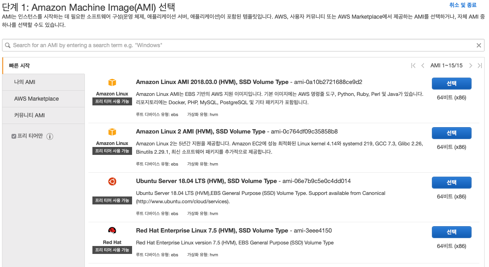
EC2 는 AMI(Amazon Machine Image)라는 이미지를 기반으로 VM 을 생성합니다. 다양한 서버 종류와 버전이 있는데요, 저는 프리티어 지원 AMI 중 ‘Red Hat Enterprise Linux 7.5’를 선택했습니다.
용도와 성능에 따라서 인스턴스 유형을 선택할 수 있습니다. 프리 티어 사용 가능 버전인 t2.micro 를 선택합니다. 다른 세부 설정도 가능하지만 ‘검토 및 시작’을 합니다.
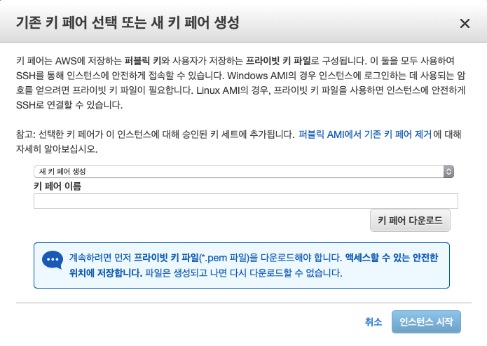
인스턴스가 실행되는 동안 해당 인스턴스에 접속할 수 있는 키 페어 파일이 선택합니다. 키 페어를 새로 생성하면 퍼블릭 키(public key)는 AWS 서버에 저장되고 프라이빗 키(private key) 파일은 사용자의 PC 에 저장합니다. 이 프라이빗 키 파일(pem 파일)을 이용해 인스턴스에 SSH 로 접속합니다. 기존에 사용하던 키 페어가 있으면 그대로 사용 가능합니다.
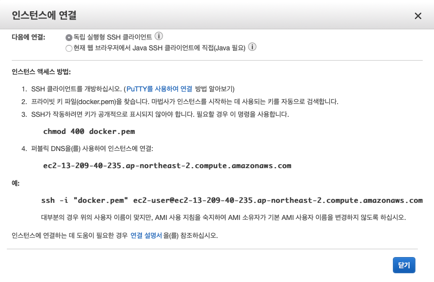
친절하게도 가이드에 나오는 명령어를 그대로 사용하면 SSH 연결이 가능합니다. 설치 과정은 로컬 VM에서 사용한 것과 동일합니다.
GCP Compute Engine
Compute Engine 은 GCP 에서 제공하는 컴퓨팅 파워입니다. GCP 는 원하는 제품을 사용해 볼 수 있도록 $300의 크레딧을 제공하고 특정 조건에 따라 무료 서비스를 제공합니다.
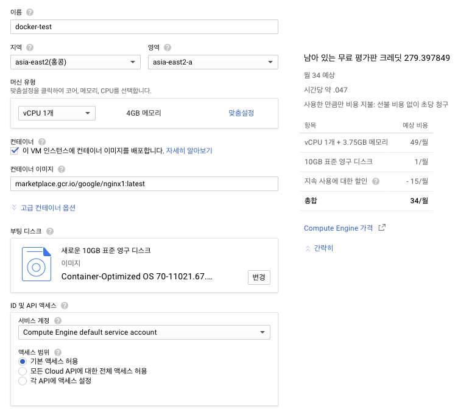
프로젝트를 만들고 VM 인스턴스를 새로 생성합니다. 저는 캡쳐와 같이 설정했습니다. GCP 의 경우 VM 생성 시 간단하게 컨테이너 이미지를 배포할 수 있는 기능을 제공합니다. 컨테이너 이미지란에는 마켓플레이스의 컨테이너 이미지에서 Nginx 의 주소( marketplace.gcr.io/google/nginx1:latest)를 가져와서 적어줍니다.
부팅 디스크는 Container-Optimized OS 를 선택할 수 있습니다. 이 컨테이너 최적화 OS는 도커 컨테이너 런타임과 모든 쿠버네티스 구성 요소가 설치되어 있으므로 필요한 컨테이너를 바로 배포할 수 있습니다. 그렇다면 이 OS 는 뭘 기반으로 하고 있을까요? 컨테이너 최적화 OS 는 오픈 소스인 Chromium OS 를 기반으로 하고 있습니다.
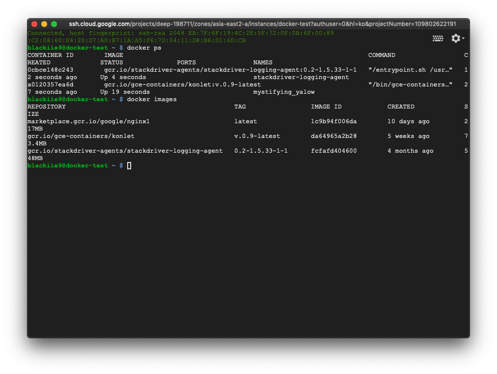
인스턴스 생성 완료 후 인스턴스 세부 정보에서 SSH 연결을 누르면 새로운 창이 뜨고 바로 접속이 됩니다. 도커는 이미 설치되어 있습니다. 연결도 그렇고 세세한 설정도 그렇고 AWS 보다 간편하네요.
docker images 를 입력하면 설정해서 내려 받은 Nginx 이미지를 확인할 수 있습니다.
1 | $ docker images |
도커 컨테이너 라이프 사이클
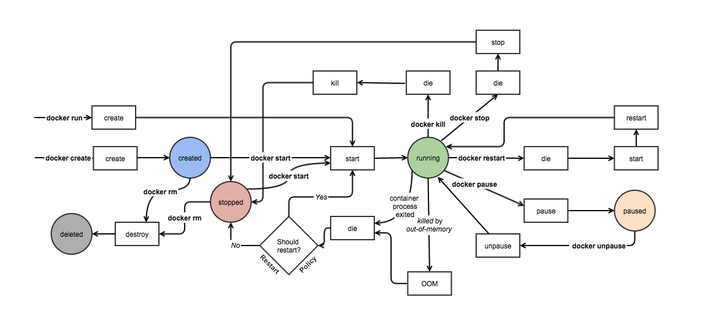
마지막으로 도커 컨테이너의 라이프 사이클을 살펴보겠습니다. 컨테이너는 도커 명령어에 따라 상태가 변화합니다. 위 그림을 클릭하면 확대해서 볼 수 있습니다.
| 상태 | 명령 | 설명 |
|---|---|---|
| 생성 | docker create |
생성만 되고 시작은 아님. |
| 생성 및 시작 | docker run |
생성하고 시작. |
| 시작 | docker start |
재시작은 docker container restart. |
| 정지 | docker stop |
실행 중인 컨테이너를 정지. |
| 삭제 | docker rm |
컨테이너를 삭제. |
참고
- 완벽한 IT 인프라 구축을 위한 Docker
- Docker Internals
- Understanding docker networking drivers and their use cases | Docker blog
- Manage data in Docker | Docker docs